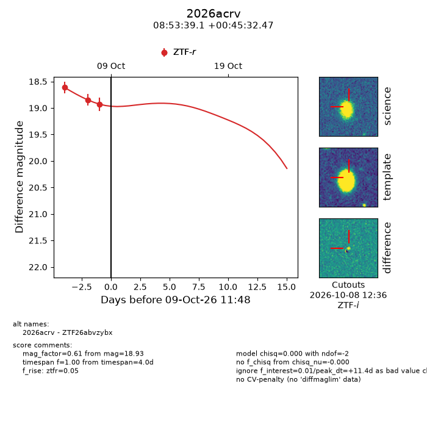
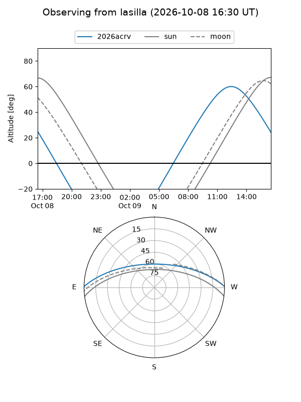
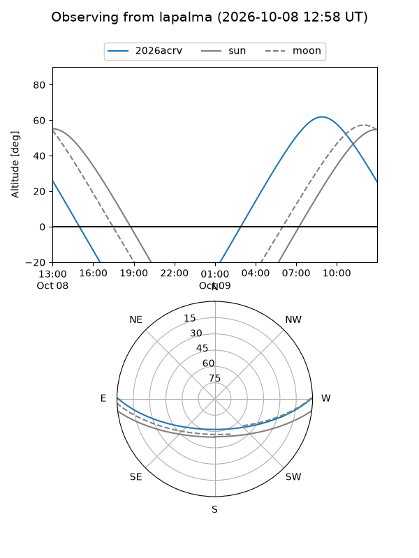
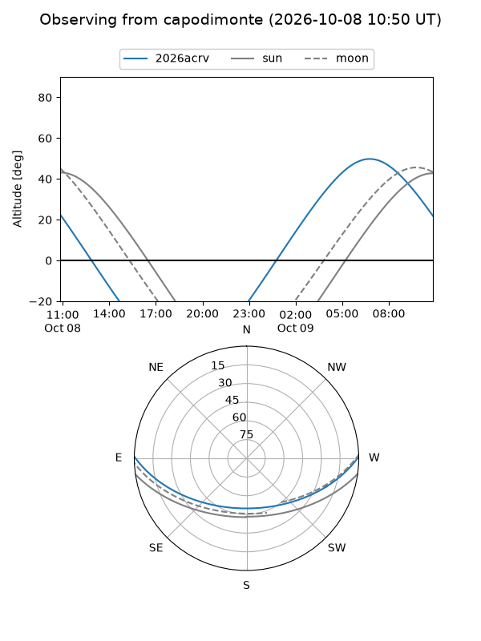
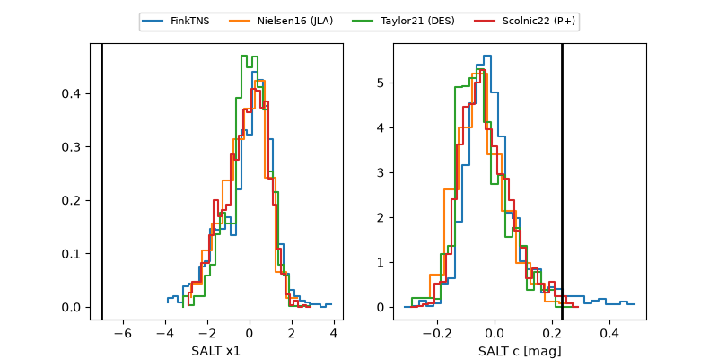

2026acrv
Target 2026acrv at 2026-10-09 11:50
Aliases and brokers:
FINK-ZTF: ztf.fink-portal.org/ZTF26abvzybx
Lasair-ZTF: lasair-ztf.lsst.ac.uk/objects/ZTF26abvzybx
ALeRCE-ZTF: alerce.online/object/ZTF26abvzybx
YSE-PZ: ziggy.ucolick.org/yse/transient_detail/2026acrv
TNS name: wis-tns.org/object/2026acrv
Direct TNS query: direct search
alt names
ZTF26abvzybx (ztf,fink_ztf)
2026acrv (tns,yse)
Coordinates:
equatorial (ra, dec) = 133.4129,+0.75902
equatorial (HMS+DMS) = 08:53:39.11,+00:45:32.47
galactic (l, b) = (227.2631,+27.28515)
Flags:
TNS type: nan
peak dt: +11.4
Photometry:
last ztfr=18.93
3 ztfr detections
Lightcurve

Visibility



Additional plots
